기계가공기능장 (2016-07-10 기출문제)
1과목: 임의 구분
1. 유압과 비교한 공압의 특징으로 틀린 것은?
- 비 압축성이다.
- 인화의 위험이 없다.
- 에너지 축적이 용이하다.
- 제어방법 및 취급이 간단하다.
(정답률: 87%)

2. 대기압을 0 으로 하여 측정한 압력은?
- 양정 압력
- 절대 압력
- 표준 압력
- 게이지 압력
(정답률: 66%)
3. 유압작동유의 점도가 너무 낮을 경우 기계의 운전에 미치는 영향으로 옳은 것은?
- 용적효율 저하
- 동력손실의 증대
- 유동저항의 증대
- 캐비테이션 발생
(정답률: 75%)
4. 공압 회로 구성에 있어 간섭 신호를 제거하기 위해 사용하는 방법 중 불필요한 신호를 차단하는 방법이 아닌 것은?
- 차동압력기 사용
- 기계적인 신호 제거 방법
- 방향성 리밋 스위치 사용
- 공압 타이어에 의한 신호 제거
(정답률: 59%)
5. 다음 밸브 기호의 명칭은?
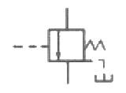
- 감압 밸브
- 무부하 밸브
- 릴리프 밸브
- 시퀀스 밸브
(정답률: 47%)
6. 제어의 정의에 대한 설명으로 틀린 것은?
- 적은 에너지로 큰 에너지를 조절하기 위한 시스템이다.
- 사람이 직접 개입하지 않고 어떤 작업을 수행시키는 것 등을 뜻한다.
- 기계의 재료나 에너지의 유동을 중계하는 것으로써 수동이 아닌 것이다.
- 기계나 설비의 작동을 자동으로 변환시키는 구성 성분의 일부를 의미한다.
(정답률: 54%)
7. 유압유가 거품을 일으킬 때 거품을 제거하기 위해 거품을 빨리 유면으로 떠오르게 하는 첨가제는?
- 소포제
- 방청제
- 산화 방지제
- 유동점강하제
(정답률: 85%)
8. 반사식 광전스위치로 감지할 수 없는 물체는?
- 금속용기
- 나무제품
- 종이상자
- 투명유리
(정답률: 84%)
9. 신호가 입력되어 출력신호가 발생한 후에는 입력신호가 없어져도 그 때의 출력상태를 유지하는 제어방법은?
- 메모리 제어
- 시퀀스 제어
- 파일럿 제어
- 타임 스케쥴 제어
(정답률: 90%)
10. 유연성 생산시스템 형태 중에서 다축 헤드 교환방식 등의 유명한 기능을 가진 공작기계군을 고정 루트인 자동반송장치와 연결된 것은?
- FTL(Flexible Transfer Line)
- LCA(Low Cost Automation)
- FMC(Flexible Manufacturing Cell)
- 전형적 FMS(Flexible Manufacturing System)
(정답률: 71%)
11. 입도가 작고, 연한 숫돌에 적은 압력으로 가압하면서, 가공물에 이송을 주고, 동시에 숫돌에 진동을 주어 표면거칠기를 좋게 하는 방법으로, 다듬질된 면을 평활하고, 방향성이 없으며, 가공에 의한 표면변칠층이 극히 미세한 가공법은?
- 래핑
- 호닝
- 배럴가공
- 슈퍼피니싱
(정답률: 88%)
12. 연삭숫돌 선정 시 결합도가 높은 숫돌을 사용해야 할 경우가 아닌 것은?
- 접촉면적이 적을 것
- 연삭 깊이가 작을 때
- 경질가공을 연삭할 때
- 숫돌차의 원주 속도가 느릴 때
(정답률: 60%)
13. 절삭저항의 3분력 중 주분력에 대한 내용으로 틀린 것은?
- 축방향으로 작용한다.
- 경사각이 클수록 감소한다.
- 절삭동력의 계산에 이용된다.
- 경도가 높은 소재일수록 크게 작용한다.
(정답률: 82%)
14. 일반적으로 밀링머신의 크기를 표시하는 것으로 옳은 것은?
- 축의 크기
- 칼럼의 크기
- 밀링머신의 무게
- 테이블의 이동거리
(정답률: 82%)
15. 절삭가공에서 공구수명의 판정기준에 해당되지 않는 것은?
- 가공면에 광택이 있는 색조 발생
- 공구인선의 마모가 거의 안생길 때
- 완성치수 변화량이 일정량에 달했을 때
- 절삭저항의 이송분력이나 배분력이 급격히 증가할 때
(정답률: 60%)
16. 모델을 음극에, 전착시킬 금속을 양극에 설치하고 전해액 속에서 전기를 통전하여 적당한 두께로 금속을 입히는 가공방법은?
- 전주 가공
- 전해 연삭
- 전해 연마
- 초음파 가공
(정답률: 56%)
17. 다음 중 경사면에 드릴가공 할 때의 작업방법으로 가장 적합한 것은?
- 건드릴을 이용하여 드릴링한다.
- 날끝각이 180° 이상 큰 드릴을 사용한다.
- 엔드밀로 자리파기를 한 후에 드릴링 한다.
- 작은 드릴로 드릴링 후 규격에 맞는 드릴로 드릴링 한다.
(정답률: 88%)
18. 구성 인선의 방지대책에 해당되지 않는 것은?
- 절삭깊이를 크게 할 것
- 절삭속도를 빠르게 할 것
- 공구의 인선을 예리하게 할 것
- 경사각을 크게 할 것
(정답률: 86%)
19. 다음 중 브로치 가공법에 대한 설명 중 틀린 것은?
- 키 홈, 스플라인 홈을 가공할 수 있다.
- 내면 또는 외면을 브로칭 가공할 수 있다.
- 브로치의 비용이 저가이므로 소량 생산에 적합하다.
- 제품의 향상, 모양, 크기, 재질에 따라 각각의 브로치가 필요하다.
(정답률: 87%)
20. 밀링가공에서 차동분할법에 의해
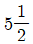
을 각도 분할할 때 옳은 방법은?- 분할크랭크 18구멍열에서 11구멍 이동시킨다.
- 분할크랭크 18구멍열에서 15구멍 이동시킨다.
- 분할크랭크 21구멍열에서 11구멍 이동시킨다.
- 분할크랭크 21구멍열에서 15구멍 이동시킨다.
(정답률: 54%)
2과목: 임의 구분
21. 그림과 같이 테이퍼를 선삭하는데 심압대를 편위시켜 가공한다고 하면 심압대의 편위거리는 몇 mm 인가?
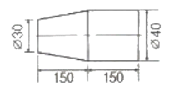
- 6
- 10
- 16
- 20
(정답률: 71%)
22. CNC 공작기계 준비기능인 G코드에서 할 수 있는 작업이 아닌 것은?
- 위치결정
- 직선보간
- 나사 절삭
- 주축 정회전
(정답률: 80%)
23. 일반적인 절삭공구에 의한 가공법과 가장 거리가 먼 것은?
- 밀링
- 선반
- 호닝
- 브로칭
(정답률: 63%)
24. 일반적으로 가공면의 표면거칠기에 영향을 가장 크게 미치는 절삭조건은?
- 이송속도
- 절삭깊이
- 절삭동력
- 절삭속도
(정답률: 58%)
25. 회전하는 통속에 가공물, 숫돌입자, 가공액, 콤파운드 등을 함께 넣괴 회전시켜 서로 부딪치며 가공되어 매끈한 가공면을 얻는 가공법은?
- 버니싱
- 배럴가공
- 전해연마
- 슈퍼피니싱
(정답률: 80%)
26. 공작기계의 이송 및 회전정밀도 유지를 위해 사용되는 윤활제의 구비조건으로 틀린 것은?
- 화학적으로 활성이며 균질이어야 한다.
- 산화나 열에 높은 안정성을 유지하여야 한다.
- 사용 상태에서 충분한 정도를 유지하여야 한다.
- 한계 윤활상태에서 견딜 수 있는 유성이 있어야 한다.
(정답률: 81%)
27. 고속가공의 특징으로 틀린 것은?
- 절삭력 감소
- 단위 시간당 절삭량 증가
- 가공 변질층의 두께 증대
- 가공면의 표면 거칠기 향상
(정답률: 53%)
28. 연삭에서 트루잉에 대한 설명으로 옳은 것은?
- 연삭 칩들이 기공을 메워서 연삭을 방해하는 형태
- 고온의 연삭열이 발생하여 면이 산화되어 변색되는 현상
- 숫돌 형상이 변화된 것을 부품형상으로 바르게 수정하는 것
- 숫돌 표면에 무디어진 입자나 기공을 메우고 있는 칩을 제거하는 것
(정답률: 80%)
29. 작업대 위에 설치해야 할 만큼 소형으로 베드의 길이가 900mm 이하로 부시, 핀, 시계부품 등을 가공하는 선반은?
- 수직 선반
- 정면 선반
- 터릿 선반
- 탁상 선반
(정답률: 78%)
30. 절삭유의 사용목적이 아닌 것은?
- 냉각 작용
- 마찰 작용
- 윤활 작용
- 세척 작용
(정답률: 90%)
31. 선반작업에서 외경 60mm, 길이 100mm의 연강 환봉을 초경바이트로 1회 절삭할 때 걸리는 가공시간은 약 얼마인가? (단, 절삭속도 60m/min, 이송량은 0.2mm/rev 이다.)
- 0.5분
- 1.6분
- 3.2분
- 5.5분
(정답률: 76%)
32. 일반적으로 공구마모를 증가시켜 공구수명에 가장 영향을 크게 미치는 절삭조건은?
- 회전수
- 이송속도
- 절삭깊이
- 절삭속도
(정답률: 63%)
33. 주철에 함유된 망간의 역할은?
- 흑연을 유리시킨다.
- 유동성을 좋게 한다.
- 흑연의 생성을 방지한다.
- 주철의 강도를 높여준다.
(정답률: 56%)
34. 일반적인 구리의 특징으로 틀린 것은?
- 아름다운 광택과 귀금속적 성질이 우수하다.
- 전기 전도율과 열전도율이 낮다.
- 연하고 전연성이 좋아 가공하기 쉽다.
- Zn, Sn 등과 합금이 용이하며 내식성이 좋다.
(정답률: 86%)
35. Al-Si계 합금을 더욱 강력하게 하기 위하여 Mg을 첨가한 것으로 기계적 성질이 좋은 합금은?
- 알코아
- γ-실루민
- 마그날륨
- 두랄루민
(정답률: 59%)
36. 알루미늄 합금의 종류 중 Al-Mg계 합금으로 내식성이 우수하여 선박용품이나 건축용 재료 등에 사용되는 것은?
- 라우탈
- Lo-Ex
- 모넬메탈
- 하이드로날륨
(정답률: 58%)
37. 선팽창계쑤가 작고 내식성이 좋아 줄자, 계측기 부품 등의 재료로 사용되는 특수강은?
- 인바
- 크롬강
- 망간강
- 합금공구강
(정답률: 83%)
38. 20℃에서 길이 100mm인 형강이 30℃에서는 길이 102mm가 되었다면 열팽창계수는?
- 2×10-1
- 2×10-2
- 2×10-3
- 2×10-4
(정답률: 75%)
39. 탄소강에 탄소 함유량을 증가시킬수록 감소되는 기계적 성질은?
- 경도
- 항복점
- 연신율
- 인장 강도
(정답률: 81%)
40. 촉침식 표면 거칠기 측정기에서 촉침과 변환기를 가지고 대상물에 직접 닿아 궤적을 그리는 요소를 포함한 기구는?
- 이송장치
- 노즐
- 측정 루프
- 프로브
(정답률: 79%)
3과목: 임의 구분
41. 다음 중 좁은 면적을 가진 경면의 평면도를 가장 정밀하게 측정할 수 있는 방법은?
- 빛의 간섭을 이용하는 방법
- 수준기를 이용하는 방법
- 오토콜리메이터를 이용하는 방법
- 전기마이크로미터를 이용하는 방법
(정답률: 59%)
42. 중간 끼워 맞춤에 해당하는 것은?
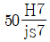
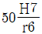
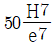
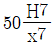
(정답률: 75%)
43. KS 표준에 따른 스퍼기어 및 헬리컬기어의 측정요소에 해당하지 않는 것은?
- 피치
- 잇줄
- 이형
- 유효지름
(정답률: 70%)
44. 미터나사 유효지름 측정에서 삼침을 넣고 측정하였더니 외측 거리가 20.246mm이고, 나사 피치가 2.000mm 일 때 나사의 유효지름을 약 몇 mm 인가? (단, 삼침의 지름은 최적 선지름을 적용한다.)
- 15.556
- 16.664
- 17.846
- 18.514
(정답률: 49%)
45. 기능 게이지의 일종으로 원형 이외에 여러 가지 단면형의 내측면을 갖는 게이지를 총칭하는 것은?
- 캘리퍼 게이지
- 리시버 게이지
- 판형 게이지
- 플러그 게이지
(정답률: 49%)
46. 위치결정구 설계 시 요구되는 사항이 아닌 것은?
- 마모에 잘 견뎌야 한다.
- 교환이 가능해야 한다.
- 공작물과의 접촉부위가 잘 보이지 않도록 설계되어야 한다.
- 청소가 용이해야 한다.
(정답률: 78%)
47. 치공구 설계의 기본원칙에 해당되지 않는 것은?
- 치공구의 제작비와 손익 분기점을 고려할 것
- 손으로 조작하는 치공구는 충분한 강도를 가지면서 가볍게 설계할 것
- 클램핑 요소에서는 되도록 스패너, 핀, 쐐기, 해머와 같이 여러 가지 부품을 같이 사용할 수 있도록 설계할 것
- 정밀도가 요구되지 않거나 조립이 되지 않는 불필요한 부분에 대해서는 기계가공 작업은 하지 않도록 할 것
(정답률: 72%)
48. 축 검사용 한계게이지(링게이지) 설계 시 마모여유를 주는 방법에 대한 설명으로 옳은 것은?
- 통과 측 치수에 부여하며 “+”값으로 준다.
- 정지 측 치수에 부여하며 “+”값으로 준다.
- 통과 측 치수에 부여하며 “-”값으로 준다.
- 정지 측 치수에 부여하며 “-”값으로 준다.
(정답률: 59%)
49. 일반적으로 드릴 지그의 다리는 보통 몇 개를 붙이는 것이 가장 좋은가?
- 4개
- 3개
- 2개
- 5개
(정답률: 71%)
50. 특정 곡선이 안내 곡선 혹은 특정 이동 경로를 따라 이동하면서 만든 곡면은?
- 심미적 곡면
- Sweep 곡면
- Blending 곡면
- Patch 곡면
(정답률: 92%)
51. 와이커 컷 방전가공에서 가공액의 역할이 아닌 것은?
- 극간의 절연 회복
- 가공 칩의 제거
- 방전 폭발 압력의 제거
- 방전 가공부분의 냉각
(정답률: 72%)
52. G74 X_ Z_ I_ K_ D_ F_ ; 의 설명으로 틀린 것은?
- F는 이송속도이다.
- I는 X방향의 이동량이다.
- D는 절삭 시 단위 전진량이다.
- Z는 사이클이 끝나는 지점의 Z좌표이다.
(정답률: 71%)
53. NC 밀링에서 지름이 80mm인 초경합금으로 만든 밀링커터로 가공물을 절삭할 때 커터의 적절한 회전수(rpm)는 약 얼마인가? (단, 절삭속도는 120m/min 이다.)
- 400
- 480
- 560
- 640
(정답률: 72%)
54. 다음 형상 모델링 방법 중 질량 등 물리적 성질의 계산이 가능한 것은?
- 직선 모델링
- 솔리드 모델링
- 서피스 모델링
- 와이어프레임 모델링
(정답률: 89%)
55. 이항분포에서 매회 A가 일어나는 확률이 일정한 값 P 일 때, n회의 독립시행 중 사상 A가 x회 일어날 확률 P(x)를 구하는 식은? (단, N은 로트의 크기, n은 시료의 크기, P는 로트의 모부적합품률이다.)
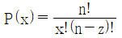
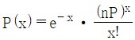
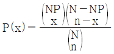
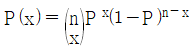
(정답률: 52%)
56. 다음 내용은 설비보전조직에 대한 설명이다. 어떤 조직의 형태에 대한 설명인가?
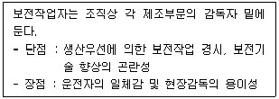
- 집중보전
- 지역보전
- 부문보전
- 절충보전
(정답률: 63%)
57. 다음은 관리도의 사용 절차를 나타낸 것이다. 관리도의 사용 절차를 순서대로 나열한 것은?
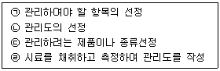
- ㉠→㉡→㉢→㉣
- ㉠→㉢→㉣→㉡
- ㉢→㉠→㉡→㉣
- ㉢→㉣→㉠→㉡
(정답률: 63%)
58. 샘플링에 관한 설명으로 틀린 것은?
- 취락 샘플링에서는 취락 간의 차는 작게, 취락 내의 차는 크게 한다.
- 제조공정의 품질특성에 주기적인 변동이 있는 경우 계통 샘플링을 적용하는 것이 좋다.
- 시간적 또는 공간적으로 일정 간격을 두고 샘플링하는 방법을 계통 샘플링이라고 한다.
- 모집단을 몇 개의 층으로 나누어 각 층마다 랜덤하게 시료를 추출하는 것을 층별 샘플링이라고 한다.
(정답률: 52%)
59. 표준시간 설정 시 미리 정해진 표를 활용하여 작업자의 동작에 대해 시간을 산정하는 시간연구법에 해당되는 것은?
- PTS
- 스톱워치법
- 워크샘플링법
- 실적자료법
(정답률: 64%)
60. 다음 표는 어느 자동차 영업소의 월별 판매실적을 나타낸 것이다. 5개월 단순이동 평균법으로 6얼의 수요를 예측하면 몇 대인가?
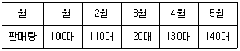
- 120대
- 130대
- 140대
- 150대
(정답률: 77%)